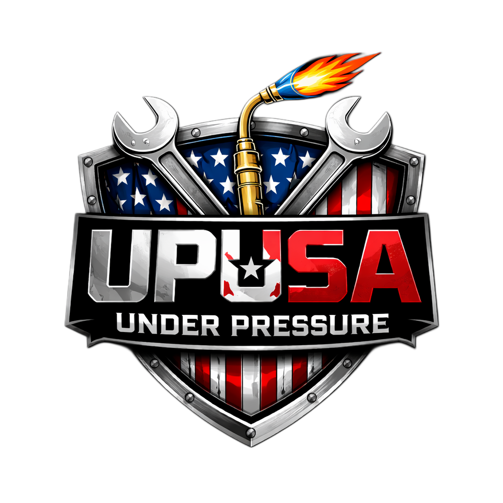

AMERICAN Flow Control
American-Darling dry-barrel and Sequoia wet-barrel hydrants.

Industry Hub / Manufacturer Directory
Find manufacturers and recognizable brands of municipal dry-barrel and wet-barrel fire hydrants across North America. Explore official product resources for water distribution and fire protection.
Manufacturer Directory Explore ManufacturersManufacturer directory
9 industry names, listed alphabetically. Each listing links directly to manufacturer resources.
American-Darling dry-barrel and Sequoia wet-barrel hydrants.
Dry-barrel and wet-barrel fire hydrants.
Medallion, Admiral and Eddy hydrants, plus wet-barrel designs.
Jones bronze and ductile iron wet-barrel hydrants.
Guardian and Vintage hydrant models.
Model 129 and 229 fire hydrants.
Centurion and Super Centurion fire hydrants.
Metropolitan and Sentinel hydrants.
Pacer, Classic Pacer and Trend hydrants, through AMERICAN Flow Control.
Listings are alphabetical and provided for informational purposes, not as rankings or endorsements. Confirm current availability, application suitability, pressure ratings, applicable standards and utility approval directly with the manufacturer before selecting a product.
The why behind the work
Explore the pipes, valves and field operations behind municipal water and wastewater systems in our Infrastructure Knowledge Center.
Explore the Knowledge Center